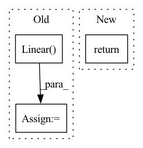

Pattern ID :21174

Before Change
nn.Linear(args.ffn_hidden_dim, output_size)
]
else:
ffn = [
nn.Linear(first_linear_dim, args.hidden_size),
nn.ReLU(),
nn.Linear(args.hidden_size, output_size)
]
After Change
model = MOE(args)
initialize_weights(model)
return model
// Additional features
if args.features_only:
In pattern: SUPERPATTERN
Frequency: 4
Non-data size: 3
Instances
Fragment ID: 67825594
Project Name: aamini/chemprop
Commit Name: c2a68dc5b795bc2858840f51addd6012373ab5d8
Time: 2018-10-29
Author: swansonk.14@gmail.com
File Name: model.py
M Class Name: AnonimousClass
N Class Name: AnonimousClass
M Method Name: build_model(1)
N Method Name: build_model(1)
M Parent Class:
N Parent Class:
M File Name: model.py
N File Name: model.py
M Start Line: 51
M End Line: 94
N Start Line: 44
N End Line: 93
'>
Before Change
self.head = nn.Sequential(
*proj_layers
)
self.out = nn.Linear(dims[-1], num_class)
def forward(self, x):
features = self.encoder(x)
embeds = self.head(features)
After Change
// forward outputs: (logits, embeds)
def __init__(self, encoder="resnet18", pretrained=True, dims=[512, 512, 512, 512, 512, 512, 512, 512, 128], num_class=3):
super().__init__(encoder, pretrained, dims, num_class)
return
def forward(self, x):
features = self.encoder(x)
embeds = self.head(features)
'>
Fragment ID: 67825595
Project Name: lilityolyan/cutpaste
Commit Name: 7266df86ac2c99e58830182d164f7efba0e2fa83
Time: 2022-01-25
Author: lg93lggt@163.com
File Name: model.py
M Class Name: CutPasteNet
N Class Name: CutPasteNet
M Method Name: __init__(5)
N Method Name: __init__(5)
M Parent Class: _CutPasteNetBase
N Parent Class: nn.Module
M File Name: model.py
N File Name: model.py
M Start Line: 7
M End Line: 21
N Start Line: 49
N End Line: 50
'>
Before Change
def forward(self, input):
output = self.network(input)
ouptut = output.view(-1, self.num_discriminator_features*self.x*self.kernel_size*self.kernel_size)
fc = nn.Linear(self.num_discriminator_features*self.x*self.kernel_size*self.kernel_size, 1)
output = fc(output)
After Change
return layers
def forward(self, input):
return self.network(input)
'>
Fragment ID: 67825593
Project Name: radtorch/radtorch
Commit Name: c84d1c77418ec615bcd01ba1bc7f6afd3011440c
Time: 2020-05-12
Author: elbanan@users.noreply.github.com
File Name: radtorch/core/gan.py
M Class Name: DCGAN_Discriminator
N Class Name: DCGAN_Discriminator
M Method Name: forward(2)
N Method Name: forward(2)
M Parent Class: nn.Module
N Parent Class: nn.Module
M File Name: radtorch/core/gan.py
N File Name: radtorch/core/gan.py
M Start Line: 151
M End Line: 154
N Start Line: 148
N End Line: 148
'>
Before Change
return layers
def forward(self, input):
fc=torch.nn.Linear(self.noise_size, self.num_generator_features*self.num_units*4*4)
output=fc(input)
output=output.view(-1, self.num_generator_features*self.num_units, 4, 4)
ouptut=self.network(output)
return output
After Change
return layers
def forward(self, input):
return self.network(output)
class DCGAN_Discriminator(nn.Module):
'>
Fragment ID: 67825596
Project Name: radtorch/radtorch
Commit Name: c84d1c77418ec615bcd01ba1bc7f6afd3011440c
Time: 2020-05-12
Author: elbanan@users.noreply.github.com
File Name: radtorch/core/gan.py
M Class Name: DCGAN_Generator
N Class Name: DCGAN_Generator
M Method Name: forward(2)
N Method Name: forward(2)
M Parent Class: nn.Module
N Parent Class: nn.Module
M File Name: radtorch/core/gan.py
N File Name: radtorch/core/gan.py
M Start Line: 94
M End Line: 98
N Start Line: 94
N End Line: 94